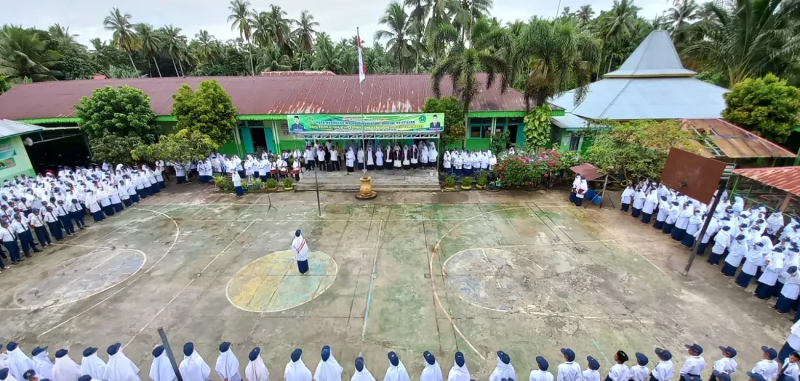

Tentang MTsN 2 Padang Pariaman
Ini adalah halaman untuk menjelaskan sejarah, struktur organisasi, dan fasilitas sekolah.
Selamat datang di MTsN 2 Padang Pariaman, sebuah institusi pendidikan yang berkomitmen untuk mencetak generasi unggul dalam ilmu pengetahuan dan akhlak mulia. Didirikan pada tahun 1985, sekolah kami telah menjadi pusat keunggulan pendidikan di wilayah Padang Pariaman. Kami menawarkan lingkungan belajar yang kondusif dengan fasilitas modern untuk mendukung setiap potensi siswa.
Fasilitas Unggulan
- Laboratorium Komputer
- Perpustakaan Digital
- Lapangan Olahraga Serbaguna
- Masjid Sekolah
Galeri Foto Sekolah

Data Statistik Siswa
| Kelas | Jumlah Siswa Laki-laki | Jumlah Siswa Perempuan | Total |
|---|---|---|---|
| Kelas VII | 120 | 135 | 255 |
| Kelas VIII | 115 | 120 | 235 |
| Kelas IX | 105 | 110 | 215 |